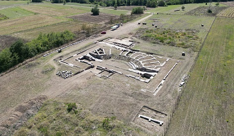
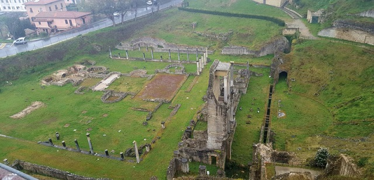

|
Más ciudades italianas con restos de época romana: El área arqueológica de Albenga. La villa romana de Albisola. Aosta fue fundada por los Salasios; en el 25 a.e.c. se convirtió en colonia romana y tomó el nombre de Augusta Praetoria. De sus monumentos destaca el arco de Augusto, el criptopórtico, la puerta romana, el teatro, las murallas y el puente romano. El yacimiento romano de Aquileia con su museo, puerto fluvial, foro, basílica, el macellum, las termas y dos domus. El anfiteatro romano de Arezzo fue construido a finales del siglo I, principios del siglo II. También destaca su museo arqueológico. Avella antigua ciudad Osca. Destaca su anfiteatro construido en el 87 a.e.c. Bari, la antigua Barium romana. Por Bari pasaba la Vía Traiana de Brindisi a Roma. En la Catedral de San Sabino, en la zona arqueológica junto a la cripta, se pueden ver los mosaicos de la basílica paleocristiana del siglo V. Destaca el mosaico de Timoteo. También de época romana se conserva un tramo de calzada en la Catedral. No olvidar el Palacio Simi, el Castillo Normando-Suevo, su Museo Arqueológico….
En Barletta se localiza el Área Arqueológica de Canne della Battaglia. Benevento, Beneventum, ciudad estratégica en la vía Apia, de origen Samnita. Destaca el teatro romano de época de Adriano y el arco triunfal de Trajano construido en el 114. También se han hallado los restos de las Termas y del Templo de Isis de Domiciano. En Brescia podemos apreciar la vía del Musei con sus monumentos, el santuario republicano, el teatro y las Domus dell'Ortaglia. Boscotrecase también conocida como la Villa Imperial. Fue construida por Agripa. Los magníficos frescos son del tercer estilo, destacan los paisajes ornamentales y las escenas mitológicas. Lamentablemente, la villa fue recubierta por la lava en 1906. En Cassino se localiza la ciudad romana de Cassinum. Destacan sus muros, foro, anfiteatro, teatro, necrópolis, ninfeo,.... La necrópolis etrusca de Cerveteri y Tarquinia.
Termas de Trajano en
Civitavecchia. El yacimiento arqueológico de las Termas Taurinas,
también conocidas como Termas de Trajano, se localizan sobre una colina
a unos 5 km del centro de Civitavecchia.
En Chiusi se localiza el Museo Nazionale Etrusco. Destacan las tumbas de época etrusca, como la famosa Tumba de la Scimmia. Cortona con sus restos de época etrusca y romana. En Colle della Torre, se halla este santuario de culto latino en uso hasta el siglo II. El templo mayor mide 21×11x179m y el pequeño 7.40×13.30m. No sabemos a la divinidad que estaban consagrados. El Museo della Nave Romana de Comacchio donde se exhiben los restos y la carga de un barco romano de época imperial. El parque arqueológico de Egnazia, la antigua Gnathia. En Falerii Novi, descubren en 2020, una ciudad romana perdida y enterrada. Se conserva en su totalizad y data del siglo III a.e.c. El sitio arqueológico de Ferento, del que destacamos su teatro del siglo I, su calzada y termas. La calzada de la Vía Appia en Frattocchi. Datada en el siglo II, fue hallada debajo de un local de McDonald's. Una calzada de 45 metros de largo y más de dos de ancho, pavimentadas y en perfecto estado de conservación. También se descubrieron tres esqueletos de hombres, sepultados entre los siglos II y III. Probablemente, según los expertos, seria diverticulum de la Via Appia que llevaba a la mansión de algún noble en la zona de la antigua ciudad romana de Bovillae. En Florencia en febrero de 2018 con la construcción de las nuevas líneas de tranvía, han aflorado números restos de época romana. En Via Valfonda, junto a la Estación de Florencia Santa María Novella, ha aparecido una gran fosa que contenía vasijas de terra sigillata decorada, ungüentarios en vidrio o terracota, datadas entre finales del siglo I a.e.c. y comienzos del siglo I, la época en que fue fundada Florentia por los romanos. A poca distancia, en el Viale Belfiore, los arqueólogos han descubierto una treintena de sepulturas de incineración, del tipo ustrina o busta, e inhumaciones que se añaden a tantas otras tumbas similares recuperadas en 1871 y que formaban parte de la misma necrópolis. Las sepulturas en fosa, donde se depositaba y quemaba el cuerpo del difunto (bustum), conservaban muchísimos clavos y ajuares funerarios, formados por lucernas (algunas incluso conservaban las mechas), frascos para bálsamos, incensarios, jarras, ollas, espejos redondos y cuadrados, joyas y otros objetos datados entre la mitad del siglo I y el siglo II. Más restos han aparecido a lo largo del trazado del tranvía datados entre el siglo I y el II, entre ellos una villa en Piazza dell'Unità, en el lado oriental de Santa María Novella, y espacios para actividades industriales, una fullonica. En el Área arqueológica de Fiesole de época romana tenemos el teatro y las termas. De época etrusca destaca la muralla, las tumbas y un templo. En Gubbio destaca el teatro romano y el área arqueológica de la Guastuglia. En la localidad de Grumento Nova se localiza el Area arqueológica de Grumentum. Podemos diferenciar tres áreas. La primera formada por el teatro, de época augusta, dos santuarios de época imperial y la casa de los mosaicos; la segunda, que comprende el área del foro y el capitolio; y la tercera por el anfiteatro. En Laino Borgo, en la región italiana de Calabria, se ha descubierto una ciudad que se remonta al siglo VI a.e.c. y ocupa casi 40 hectáreas. De acuerdo con los investigadores, la hipótesis principal es que se trate de la perdida ciudad de Laos, una subcolonia dependiente de la griega Sybaris, que creció posteriormente bajo control de los lucanos. Se pueden identificar aún diversos espacios, como las calles, patios y pequeñas piscinas para recoger el agua de la lluvia. Amiternum antigua ciudad Sabina a 9km de L'Aquila. Los romanos conquistaron la ciudad en el 293 a.e.c. En época augusta se convirtió en mucipium. Aquí nació Poncio Pilatos. De sus restos destaca el anfiteatro del siglo I que tenía una capacidad para 6000 espectadores, un teatro de época augusta con capacidad para unos 2000 espectadores; una villa imperial, restos de un complejo termal y de un acueducto. En Lecce, destacan su teatro y anfiteatro de los siglos I y II. La Columnata de San Lorenzo uno de los principales vestigios de la Mediolanum romana, Milán, junto alos restos del teatro, anfiteatro, las termas y el circo. Miseno fue la base naval más grande de la Armada romana, la Classis Misenensis, tuvo aquí su base. Se estableció en el 27 a.e.c. por Marco Agrippa. Del antiguo puerto militar aún son reconocibles, a poca profundidad bajo el agua, los cimientos de los muelles antiguos. La Piscina Mirabilis era el gran depósito del acueducto Serino, encargado del aprovisionamiento de las instalaciones militares. De forma rectangular, excavada en la roca sobre de 70 m de longitud y 22,50 de ancho y 15 de altura, subdividida en cinco largas naves de cuatro hileras de doce pilastras cruciformes. En la ribera occidental de la rada de Miseno, se han hallado otros dos monumentos, el oratorio de las Augustales y el Teatro. Otro vestigio que ha quedado de la antigua Miseno son los restos de lo que se interpreta como un faro sobre la punta del Poggio. Monte Porzio Catone. La ciudad de Tusculum se encuentra a unos 30 kilómetros al sur de Roma, en el término municipal de Monte Porzio Catone, dentro del parque natural de los Castelli Romani de Frascati. Habitada desde la protohistórica. Antigua ciudad etrusca, municipium romano en el 381 a.e.c. Ciudad de descanso de la nobleza romana: Cicerón, Lúculo, Tiberio, Nerón, Galba….De sus restos destacan el teatro y el foro. En Montenerodomo se hallan restos de época romana, el foro, un templo y una basílica. El Museo de los Barcos Romanos de Nemi. En Negrar di Valpolicella, cerca de Verona, En mayo de 2020, los arqueólogos han descubierto un mosaico romano y restos de una villa, debajo de un viñedo. data del siglo III. El lugar fue localizado en 1992. Otricoli, la antigua Ocriculum, de sus monumentos destaca el teatro, el anfiteatro, las termas, cuyo mosaico octogonal policromado se encuentra en la Sala Rotonda del Museo Pío-Clementino del Vaticano, y las grandes subestructuras republicanas. Pignataro Interamna. Las ruinas de Interamna Lirenas, una ciudad romana se mantuvo próspera durante el declive del imperio. Un raro teatro techado, mercados, almacenes, un puerto fluvial...
 Foto: Alessandro Launaro
Roma. En septiembre de 2020, un sorprendente hallazgo a medio camino entre Roma y la antigua Ostia ha sorprendido a los arqueólogos. Se trata de una enorme piscina, o un contenedor de agua, de 40 metros de largo y 12 de ancho. los expertos no tienen ni idea de cuál era su función cuando fue construida, en el siglo IV a.e.c. Rímini poblada antes desde la antiguedad. En el año 268 a.e.c. los romanos fundaron la ciudad de Ariminum, que fue la primera colonia de derecho latino al norte de los Apeninos. Obtuvo la ciudadanía romana en el año 90. Las investigaciones arqueológicas dan testimonio de una ciudad próspera hasta el siglo III. De sus restos destacan el Arco de Augusto, levantado en 27 a.e.c, el Puente de Tiberio, construido en el año 21, el Teatro, las Termas, Templos y el Anfiteatro con capacidad para alojar entre 10.000 y 20.000 espectadores. La villa romana de Russi. En Sabaudia, destaca el parque arqueológico que agrupará la villa de Domiciano , la Casarina , el canal Neroniano y la necrópolis de la vía Severiana. - El antiguo santuario de baños romanos de San Casciano Dei Bagni. Se trata de un antiguo complejo termal que data del siglo III a.e.c., y que era un lugar de veneración y curación antes de ser abandonado ceremoniosamente en el siglo V. Entre los asombrosos hallazgos extraídos del lodo termal se encuentran 24 bronces datados entre el siglo II a.e.c. y el siglo I. Muchos de los bronces son partes del cuerpo (pies, manos, orejas, incluso órganos internos, como un útero y una víscera) o pequeñas estatuas de bebés, niños, adultos mayores y divinidades. Ex voto, o una ofrenda hecha en cumplimiento de un juramento. En San Gemini se hallala antigua ciudad romana de Carsulae. Destacan los restos del anfiteatro, las termas, los edificios públicos y el arco de San Damiano. Sarsina. Aquí nació Plauto. En agosto de 2023 descubren un templo tripartido del siglo I a.e.c. Sepino, Saepinum, con su recinto amurallado y puertas, el teatro, foro y necrópolis. Spello, Hispellum, Plinio la nombra como una colonia, y aparece en inscripciones con el título de Colonia Julia Hispelli y de Colonia Urbana Flavia; se cree que recibió dos colonias, una bajo Augusto y otra bajo Vespasiano. Quedan importantes restos romanos, entre ellos el anfiteatro, la puerta Veneris y las murallas. El santuario de Ercole se halla a 6km de la ciudad de Sulmona. Data del siglo IV a.e.c. y fue reformado por los romanos en el siglo I. En Sperlonga la villa y la gruta de Tiberio; y el museo arqueológico. Teano antigua ciudad Samnita. Después de la conquista romana se convirtió en la ciudad romana de Teanum Sidicinum. El teatro data de finales del siglo I. También destaca su museo y un templo dedicado a Apolo. Teramo, la antigua Interamnia, conserva diversos restos de época romana como el anfiteatro. Data de mediados del siglo I, parte de él se halla bajo la Catedral. En Terni, podemos visitar el Yacimiento arqueológico de Carsulae. Destacan los restos de una instalación termal y de un amplio foro; particularmente bien conservados están también el teatro y el anfiteatro de la ciudad. Terracina con su Foro Emiliano y Via Appia, sus dos arcos, el templo capitolino, santuario de Júpiter y su museo arqueológico.
Tivoli. Villa Adriana y
su área arqueológica. En febrero de 2021 arqueólogos españoles descubren
la sala de banquetes más lujosa del Imperio Romano. Torre del Greco. En Torre del Greco se halla Villa Sora, data del siglo I y se cree que pertenecía a la familia imperial. La casa fue diseñada en tres plantas, el piso más alto se derrumbó tras la erupción del Vesubio, mientras que los pisos inferiores fueron enterrados por los escombros volcánicos. La villa se descubrió en el siglo XVII. El edificio fue decorado ricamente con frescos y mosaicos. El peristilo de la villa mide más de 60 metros cuadrados, y fue pavimentada con mármol policromado. Cerca se han hallado los restos de un complejo termal. La villa se encuentra actualmente abierta al público, pero sólo con acceso a la planta intermedia. Turín con la Puerta Palatina, los restos del teatro y el museo. Velia fue fundada por los griegos en el 540 a.e.c. y convertida en municipio romano en el 88 a.e.c. Conserva parte de sus murallas y tres puertas. La Acrópolis, es el resto arqueológico conservado más antiguo de la ciudad, data del siglo VI a.e.c. Se han hallado restos de un pequeño teatro del siglo III a.e.c., periodo helénico. En la terraza superior se halla el templo Jónico dedicado a Atenea. La Porta Rosa fue construida en torno al siglo IV a.e.c. en un estrechamiento natural. Su nombre deriva de la inscripción de Mario Napoli. Es el único ejemplo de puerta griega con arco abovedado. Las termas fueron construidas en torno al siglo III a.e.c y estuvieron en uso hasta el siglo II. El Parque Arqueológico de Venosa, con el anfiteatro, la domus romana, el decumano, las termas de la época imperial, la basílica paleocristiana y El Museo Arqueológico Nacional de Venosa. El yacimiento arqueológico de Ventimiglia
Verona.
Alrededor del año 300 a.e.c con la conquista del valle del río Po el
territorio de Verona quedó bajo el Imperio Romano. La ciudad se
convirtió en colonia romana en el año 89 a.e.c y municipium en el 49
a.e.c. Posteriormente se convertiría en importante objetivo de los
ostrogodos, lombardos y francos. El anfiteatro data de la primera mitad
del siglo I. Tercer anfiteatro más grande de Italia, después del Coliseo
y Capua. El Ponte Pietra data del siglo I, reconstruido varias veces.
Hoy son visibles las dos arcadas de época romana. El Arco dei Gavi data
del siglo I. Estaba dedicado a la Gens Gavia. En el Parque Arqueológico de Urbs Salvia, situado en el actual municipio de Urbisaglia, y en la localidad de Villamagna, han descubierto aquí una villa romana de 1.600 años de antigüedad donde se ha localizado la que hasta ahora es la única cervecería de época romana hallada en Italia. El área arqueológica de época etrusca y romana de Volterra. De ella destaca el museo, la acrópolis, el teatro del siglo I a.e.c. y las termas tardorromanas adyacentes.

|